Running a Simple Assessment (The Basics)
o_get_started.RmdThis vignette provides an end-to-end example of implementing a stock
assessment model using the 2024 Gulf of Alaska (GOA) Dusky Rockfish
assessment as a case study. We show how to set up a simple stock
assessment model, evaluate alternative model configurations, conduct
standard diagnostics, and use model projections to develop catch advice
for future years. The GOA Dusky Rockfish Model is formulated as a
single-area, single-sex, age-structured model with one fishery and one
survey fleet. It spans the years 1977–2024, includes 33 modeled ages,
and assumes a fixed natural mortality rate. Both fishery and survey
selectivity follow a logistic, time-invariant form. Catch advice is
based on spawning potential ratio reference points, targeting a
population level corresponding to
.
First, let us load in any necessary packages as well as data files. The
Dusky Rockfish data file is provided within the SPoRC
package and is called sgl_rg_dusky_data.
Setup model
To initially setup the model, an input list composed of a data list,
parameter list, and mapping list is required. This setup is facilitated
by the function Setup_Mod_Dim, where users define vectors
of years, ages, and lengths. Users must also specify the number of
modeled regions (n_regions), sexes (n_sexes),
fishery fleets (n_fish_fleets), and survey fleets
(n_srv_fleets).
input_list <- Setup_Mod_Dim(
years = sgl_rg_dusky_data$years,
# vector of years
ages = sgl_rg_dusky_data$mod_ages,
# vector of ages
lens = sgl_rg_dusky_data$lens,
# number of lengths
n_regions = sgl_rg_dusky_data$n_regions,
# number of regions
n_sexes = sgl_rg_dusky_data$n_sexes,
# number of sexes
n_fish_fleets = sgl_rg_dusky_data$n_fish_fleets,
# number of fishery fleets
n_srv_fleets = sgl_rg_dusky_data$n_srv_fleets, # number of survey fleets
verbose = TRUE # whether to output messages
)Setup Recruitment Dynamics
After initializing the input_list, the object is passed
to the next function, Setup_Mod_Rec, to define recruitment
dynamics. For the GOA Dusky Rockfish model, recruitment is specified as
follows:
- Mean recruitment is estimated,
- No lognormal bias correction is applied, which is achieved by setting all bias ramp values to 0 (and turning on the bias ramp),
- Recruitment variability is fixed,
- Spawning is assumed to occur at the start of the year.
input_list <- Setup_Mod_Rec(
input_list = input_list,
# Model options
# Doing bias ramp, but basically setting it so that no lognormal bias correction happens (as in the dusky model)
do_rec_bias_ramp = 1,
bias_year = rep(length(sgl_rg_dusky_data$years), 4),
# do bias ramp (0 == don't do bias ramp, 1 == do bias ramp)
sigmaR_switch = 1,
# when to switch from early to late sigmaR (switch in first year)
ln_sigmaR = rep(-0.1068576 , 2), # 2 values for early and late sigma
# Starting values for early and late sigmaR
rec_model = "mean_rec",
sigmaR_spec = "fix",
# fix early sigmaR and late sigmaR
init_age_strc = 1, # geometric series to derive initial age structure
ln_global_R0 = log(2.7), # starting value for mean_rec
t_spawn = sgl_rg_dusky_data$spwn_month
)Setup biological dynamics
With the updated input_list from the previous step, the next stage is
to parameterize the model’s biological dynamics. The function
Setup_Mod_Biologicals requires weight-at-age
(WAA) and maturity-at-age (MatAA) inputs, each
dimensioned by n_regions, n_years,
n_ages, and n_sexes. In this case, natural
mortality is assumed to be constant and fixed at 0.07.
input_list <- Setup_Mod_Biologicals(
input_list = input_list,
# Data inputs
WAA = sgl_rg_dusky_data$waa_arr, # weight at age array
MatAA = sgl_rg_dusky_data$mataa_arr, # maturity at age array
# Model options
# fit lengths
fit_lengths = 1,
SizeAgeTrans = sgl_rg_dusky_data$sizeage, # size age transition
AgeingError = sgl_rg_dusky_data$age_error_matrix, # ageing error matrix
M_spec = "fix",
# fixing natural mortality
Fixed_natmort = sgl_rg_dusky_data$fix_natmort,
addtocomp = 0.00001 # adding small constant to compositions
)Setup Movement and Tagging
Because this vignette illustrates a single-region model, movement
dynamics are not included. However, users must specify how movement is
parameterized. In this example, movement is not estimated
(use_fixed_movement = 1), the movement matrix is set to
identity (Fixed_Movement = NA), and recruits are assumed
not to move (do_recruits_move = 0). Tagging dynamics are
defined similarly: the input_list is updated and the
UseTagging argument is set to 0.
# setup movement
input_list <- Setup_Mod_Movement(
input_list = input_list,
use_fixed_movement = 1,
Fixed_Movement = NA,
do_recruits_move = 0
)
# setup tagging
input_list <- Setup_Mod_Tagging(
input_list = input_list,
UseTagging = 0)Setup Catch and Fishing Mortality
The function Setup_Mod_Catch_and_F then updates the
input_list with catch data and fishing mortality
specifications. Three data inputs are required: observed catch
(ObsCatch), the type of catch (Catch_Type),
and an indicator for whether the catch is used in the model
(UseCatch). Model options include a switch for applying a
fishing mortality penalty (Use_F_pen) and whether the catch
error standard deviation is fixed or estimated
(sigmaC_spec), and a small constant added to avoid problems
with zero catches (Catch_Constant). Finally, fixed values
for the observation error of catch (ln_sigmaC) and the
penalty on fishing mortality (ln_sigmaF) are provided. Note
that these are specified as
because the model was originally written in ADMB where these values were
computed as sum of squares, and the standard deviation of these terms
were implicitly assumed to be set at 1.
input_list <- Setup_Mod_Catch_and_F(
input_list = input_list,
# Data inputs
ObsCatch = sgl_rg_dusky_data$ObsCatch, # observed catch
Catch_Type = sgl_rg_dusky_data$Catch_Type, # catch type
UseCatch = sgl_rg_dusky_data$UseCatch, # whether catch is used
# Model options
Use_F_pen = 1,
# whether to use f penalty, == 0 don't use, == 1 use
sigmaC_spec = "fix",
# Fixing sigma C and F
ln_sigmaC = array(log(sqrt(1/2)), dim = c(input_list$data$n_regions, length(input_list$data$years), input_list$data$n_fish_fleets)),
ln_sigmaF = array(log(sqrt(1/2)), dim = c(input_list$data$n_regions, input_list$data$n_fish_fleets))
)Setup Fishery Indices and Compositions
Next, the function Setup_Mod_FishIdx_and_Comps updates
the input_list with fishery index and composition data.
Inputs include observed fishery indices with associated standard errors,
indicators for whether each index is used, and observed age and length
compositions with corresponding use flags and input sample sizes. Model
options then define how these data are treated: in this case, no fishery
index is applied (fish_idx_type = "none"), both age and
length compositions are modeled with multinomial likelihoods, and the
composition structures are specified as
agg_Year_1-terminal_Fleet_1 (for any single region, single
sex model, composition structures should be specified as such, wherein
these data are aggregated across model partitions).
input_list <- Setup_Mod_FishIdx_and_Comps(
input_list = input_list,
# data inputs
ObsFishIdx = sgl_rg_dusky_data$ObsFishIdx, # fishery index
ObsFishIdx_SE = sgl_rg_dusky_data$ObsFishIdx_SE, # standard errors
UseFishIdx = sgl_rg_dusky_data$UseFishIdx, # whether fishery indices are used
ObsFishAgeComps = sgl_rg_dusky_data$ObsFishAgeComps, # observed fishery ages
UseFishAgeComps = sgl_rg_dusky_data$UseFishAgeComps, # whether fishery ages are used
ISS_FishAgeComps = sgl_rg_dusky_data$ISS_FishAgeComps, # input sample size for fishery ages
ObsFishLenComps = sgl_rg_dusky_data$ObsFishLenComps, # observed fishery lengths
UseFishLenComps = sgl_rg_dusky_data$UseFishLenComps, # whether fishery lengths are used
ISS_FishLenComps = sgl_rg_dusky_data$ISS_FishLenComps, # input sample size for fishery lengths
# Model options
fish_idx_type = c("none"),
# indices for fishery
FishAgeComps_LikeType = c("Multinomial"),
# age comp likelihoods for fishery fleet
FishLenComps_LikeType = c("Multinomial"),
# length comp likelihoods for fishery
FishAgeComps_Type = c("agg_Year_1-terminal_Fleet_1"),
# age comp structure for fishery
FishLenComps_Type = c("agg_Year_1-terminal_Fleet_1")
# length comp structure for fishery
)Setup Survey Indices and Compositions
The Setup_Mod_SrvIdx_and_Comps function is defined
similar to the previous code chunk, but instead, updates the
input_list with survey indices and composition data.
input_list <- Setup_Mod_SrvIdx_and_Comps(
input_list = input_list,
# data inputs
ObsSrvIdx = sgl_rg_dusky_data$ObsSrvIdx, # observed survey index
ObsSrvIdx_SE = sgl_rg_dusky_data$ObsSrvIdx_SE / sgl_rg_dusky_data$ObsSrvIdx, # lognormal SD
UseSrvIdx = sgl_rg_dusky_data$UseSrvIdx, # whether survey indices are used
ObsSrvAgeComps = sgl_rg_dusky_data$ObsSrvAgeComps, # observed survey ages
ISS_SrvAgeComps = sgl_rg_dusky_data$ISS_SrvAgeComps, # input sample size for survey ages
UseSrvAgeComps = sgl_rg_dusky_data$UseSrvAgeComps, # whether survey ages are used
ObsSrvLenComps = sgl_rg_dusky_data$ObsSrvLenComps, # observed survey lengths
UseSrvLenComps = sgl_rg_dusky_data$UseSrvLenComps, # whether survey lengths are used
ISS_SrvLenComps = sgl_rg_dusky_data$ISS_SrvLenComps, # input sample size for survey lengths
# Model options
srv_idx_type = c("biom"),
# abundance and biomass for survey fleet 1
SrvAgeComps_LikeType = c("Multinomial"),
# survey age composition likelihood for survey fleet 1
SrvLenComps_LikeType = c("Multinomial"),
# survey length composition likelihood for survey fleet 1
SrvAgeComps_Type = c(
"agg_Year_1-terminal_Fleet_1"
),
# survey age comp type
SrvLenComps_Type = c(
"agg_Year_1-terminal_Fleet_1"
)
# survey length comp type
)Setup Fishery Selectivity and Catchability
Following defining the data inputs into the model, we can specify the fishery selectivity and catchability parameterizations. Here, no time-varying selectivity is specified, and selectivity is modelled as logistic with parameters and . Catchability is fixed because no fishery indices are included in the model.
input_list <- Setup_Mod_Fishsel_and_Q(
input_list = input_list,
# Model options
# fishery selectivity, whether continuous time-varying
cont_tv_fish_sel = c("none_Fleet_1"),
# fishery selectivity blocks
fish_sel_blocks = c("none_Fleet_1"),
# fishery selectivity form
fish_sel_model = c("logist2_Fleet_1"),
# fishery catchability blocks
fish_q_blocks = c("none_Fleet_1"),
# whether to estiamte all fixed effects for fishery selectivity
fish_fixed_sel_pars_spec = c("est_all"),
# whether to estiamte all fixed effects for fishery catchability
fish_q_spec = c("fix")
)Setup Survey Selectivity and Catchability
Similar to the Setup_Mod_Fishsel_and_Q function, we can
define the survey selectivity and catchability parameterizations. Again,
no time-vaying selectivity is specified, and selectivity is modelled as
logistic with parameters
and
.
However, catchabiltiy is estiamted with a estimated for the survey
index. Note that the survey prior specifications must be passed into the
function as a dataframe with column names: region,
block, fleet, mu, and
sd.
# Set up prior for survey catchability
srv_q_prior <- data.frame(
region = 1,
block = 1,
fleet = 1,
mu = 1,
sd = 0.447213595
)
input_list <- Setup_Mod_Srvsel_and_Q(
input_list = input_list,
# Model options
# survey selectivity, whether continuous time-varying
cont_tv_srv_sel = c("none_Fleet_1"),
# survey selectivity blocks
srv_sel_blocks = c("none_Fleet_1"),
# survey selectivity form
srv_sel_model = c("logist2_Fleet_1"),
# survey catchability blocks
srv_q_blocks = c("none_Fleet_1"),
# whether to estiamte all fixed effects for survey selectivity
srv_fixed_sel_pars_spec = c("est_all"),
# whether to estiamte all fixed effects for survey catchability
srv_q_spec = c("est_all"),
Use_srv_q_prior = 1,
# Use catchability prior
srv_q_prior = srv_q_prior
)Setup Model Weighting
Finally, the model weighting scheme can be defined to control the relative influence of different data sources on the assessment. In the GOA Dusky Rockfish model, weighting is applied using emphasis factors, which allow certain data types to have more or less influence on model fitting. If users prefer not to apply differential weighting, all values can be set to 1. For catch data, a different weighting scheme is applied for the early years of the model: catches from 1977–1991 are given a weight of 2, while catches in later years are assigned a higher weight of 50.
The weighting setup is implemented using the function
Setup_Mod_Weighting, which accepts the constructed
input_list along with specific weights for various data components.
Here, catch weights are defined as described above, fishery indices are
given a weight of 1, survey indices a weight of
1.66, recruitment a weight of 1, and fishing
mortality a weight of 2. Tagging data are not used, so its
weight is set to 0. Age and length compositions for both
fishery and survey fleets are assigned arrays of weights, typically set
to 1 for fishery data and survey ages, while survey length compositions
are set to 0.
# catch weigthing
Wt_Catch <- array(0, dim = c(sgl_rg_dusky_data$n_regions, length(sgl_rg_dusky_data$years), sgl_rg_dusky_data$n_fish_fleets))
Wt_Catch[,which(sgl_rg_dusky_data$years %in% 1977:1991),] <- 2
Wt_Catch[,-which(sgl_rg_dusky_data$years %in% 1977:1991),] <- 50
input_list <- Setup_Mod_Weighting(
input_list = input_list,
Wt_Catch = Wt_Catch,
Wt_FishIdx = 1,
Wt_SrvIdx = 1.66,
Wt_Rec = 1,
Wt_F = 2,
Wt_Tagging = 0,
Wt_FishAgeComps = array(1, dim = c(input_list$data$n_regions,
length(input_list$data$years),
input_list$data$n_sexes,
input_list$data$n_fish_fleets)),
Wt_FishLenComps = array(1, dim = c(input_list$data$n_regions,
length(input_list$data$years),
input_list$data$n_sexes,
input_list$data$n_fish_fleets)),
Wt_SrvAgeComps = array(1, dim = c(input_list$data$n_regions,
length(input_list$data$years),
input_list$data$n_sexes,
input_list$data$n_srv_fleets)),
Wt_SrvLenComps = array(0, dim = c(input_list$data$n_regions,
length(input_list$data$years),
input_list$data$n_sexes,
input_list$data$n_srv_fleets))
)Fit model
Once the model has been fully defined, it can be fitted to the data.
In this example, we will fit two models. The first model uses the setup
described above without any additional weighting adjustments. The second
model applies Francis re-weighting to the same base model. This approach
serves to illustrate how to compare alternative model configurations and
demonstrates the implementation of Francis re-weighting within the
SPoRC framework. First, let us extract the data,
parameters, and mapping lists constructed from the functions defined
above.
data <- input_list$data
parameters <- input_list$par
mapping <- input_list$mapFit model (Without Francis)
To fit the model without Francis reweighting, users can call the
fit_model helper function and pass the data, parameters,
and mapping list. No random effects are specified for this model, and a
total of 3 newton loops are specified to ensure that the model
approaches a minimum. Following the optimization of the model, we can
extract the standard error report from the model (i.e., standard errors
derived from inverting the Hessian matrix).
# Fit model
nofrancis_model <- fit_model(data,
parameters,
mapping,
random = NULL,
newton_loops = 3,
silent = FALSE
)
nofrancis_model$sdrep <- RTMB::sdreport(nofrancis_model) # get standard error reportFit model (With Francis)
Conducting Francis re-weighting on composition data requires an
iterative procedure to adjust the effective weights of age and length
compositions based on model fit. First, a separate copy of the data list
(francis_data) is created, which will be updated with
revised weights during the iterations. The number of Francis iterations
is specified (n_francis_iter = 10), which indicates the
number of times the model is refit, where the composition weights are
updated after each model iteration. The run_francis
function then conducts the reweighting procedure and the weights are
saved inside the data list object
(francis_runs$obj$data)
francis_data <- data # redefine data list for francis (replacing data weights)
# run francis reweighting
francis_runs <- run_francis(francis_data,
parameters,
mapping,
n_francis_iter = 10,
newton_loops = 3)
# get obj
francis_model <- francis_runs$obj
francis_data <- francis_runs$obj$data
francis_model$sdrep <- RTMB::sdreport(francis_model) # get standard error reportCheck Model Results
Convergence
Following model optimization, helper functions can be utilized to
perform post-optimization sanity checks to ensure that the estimates are
reliable. The function post_optim_sanity_checks evaluates
the fit by examining the standard errors, gradients, and correlations of
the parameter estimates. In this example, the function is applied to
both the model without Francis re-weighting
(nofrancis_model) and the model with Francis re-weighting
(francis_model). The checks required users to specify
tolerances for gradients, standard errors, and correlations among
parameters. The following models all appear to pass these sanity
checks.
# check no francis model
post_optim_sanity_checks(nofrancis_model$sdrep,
nofrancis_model$rep,
gradient_tol = 1e-5,
se_tol = 5,
corr_tol = 0.95)
# check francis model
post_optim_sanity_checks(francis_model$sdrep,
francis_model$rep,
gradient_tol = 1e-5,
se_tol = 5,
corr_tol = 0.95)Time Series Results
Next, we can compare time series results from the two models using
helper functions in SPoRC. The function
get_ts_plot is used to generate comparative plots of the
Francis re-weighted model and the model without Francis re-weighting.
The resulting list of plots (ts_plot) provides a visual
comparison of key metrics, including spawning biomass, recruitment,
total biomass, and fishing mortality. Accessing
ts_plot[[1]] displays the first plot in the list, which
presents combined time series across all metrics. The function can also
be used for a single model.
ts_plot <- get_ts_plot(rep = list(francis_model$rep, nofrancis_model$rep),
sd_rep = list(francis_model$sdrep, nofrancis_model$sdrep),
model_names = c("With Francis", "No Francis"))
ts_plot[[1]]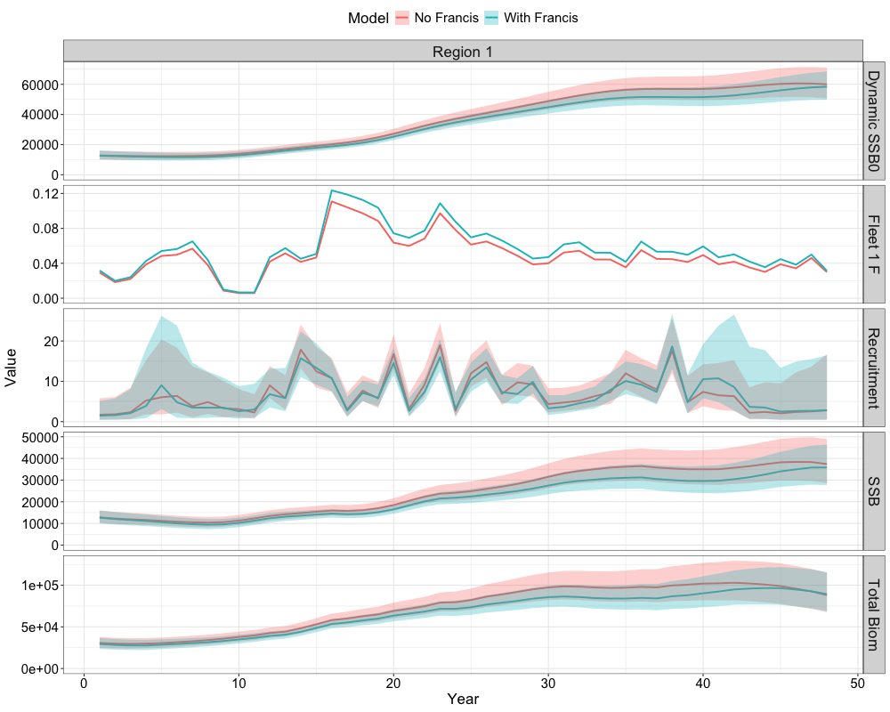
Catch and Index Fits
We can also compare fits to the catch data and index data. This can
be achieved by using the get_catch_fits_plot and
get_idx_fits_plot functions. For fits to the catch data,
this is given by the following code chunk.
get_catch_fits_plot(list(data, francis_data),
list(nofrancis_model$rep, francis_model$rep),
c("No Francis", "With Francis"))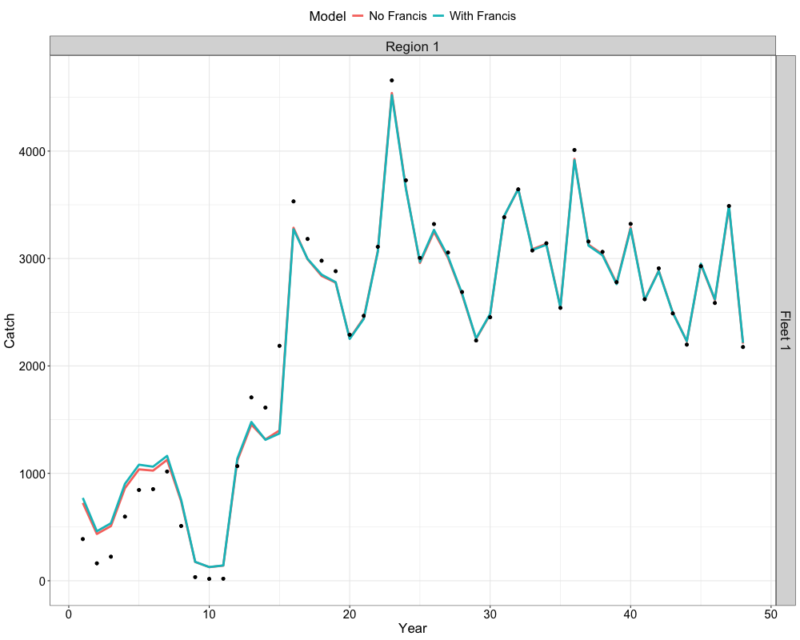
Fits to the index data can be illustrated in a similar manner and is given by the following code chunk.
get_idx_fits_plot(list(data, francis_data),
list(nofrancis_model$rep, francis_model$rep),
c("No Francis", "With Francis"))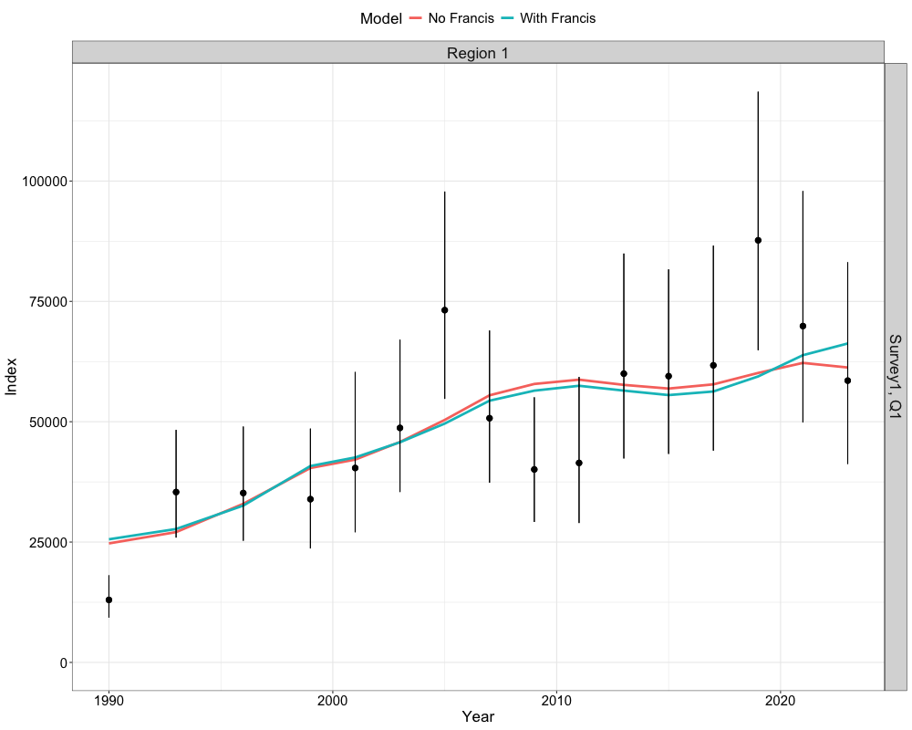
Composition Fits
The GOA Dusky Rockfish model fits to a total of 3 composition
datasets, which include fishery ages and lengths, as well as survey
ages. To inspect these model fits, users can extract the observed and
expected composition proportions using the get_comp_prop
function.
# Extract observed and expected compositions
comp_prop <- get_comp_prop(francis_data,
francis_model$rep,
age_labels = 4:30,
len_labels = 21:52,
year_labels = 1977:2024)Next, we can then obtain one-step-ahead (OSA) residuals, which uses
the afscOSA package, as well as plot the aggregated fits.
The following code chunk computes OSA residuals for composition data to
assess model fit. The get_osa function computes these
residuals by comparing observed (Obs_FishAge_mat) and
predicted (Pred_FishAge_mat) age compositions, while
accounting for effective sample sizes that combine the input sample size
with Francis re-weighting factors, across the years and age bins of
interest for fleet 1. We can then visualize these residuals with
SPoRC::plot_resids, which generates diagnostic plots such
as bubble plots and QQ plots. We can also additionally plot the
aggregated fits to the composition data as a further diagnostic
tool.
Fishery Ages
# get one step ahead fishery ages
fishages <- get_osa(obs_mat = comp_prop$Obs_FishAge_mat, # observed fishery age compositions
exp_mat = comp_prop$Pred_FishAge_mat, # predicted fishery age compositions
N = francis_data$ISS_FishAgeComps[1,which(francis_data$UseFishAgeComps[,,1] == 1),1,1] * # input sample size
unique(francis_data$Wt_FishAgeComps[1,which(francis_data$UseFishAgeComps[,,1] == 1),1,1]), # francis weight
years = which(francis_data$UseFishAgeComps[,,1] == 1), # years with fishery ages
fleet = 1, # fleet
bins = 4:30, # age bins
comp_type = 0, # composition type (age-specific)
bin_label = "Ages" # bin labels
)
# plot OSA residuals
resid_plot <- SPoRC::plot_resids(osa_results = fishages)
# Get Aggregated Plot
fishage_agg <- comp_prop$Fishery_Ages %>%
group_by(Age, Fleet) %>%
summarize(obs = mean(obs), pred = mean(pred)) %>%
filter(Fleet == 1) %>%
ggplot() +
geom_col(aes(x = Age, y = obs), fill = 'darkgreen', alpha = 0.8) +
geom_line(aes(x = Age, y = pred), col = 'black', lwd = 1.3) +
theme_bw(base_size = 15) +
labs(x = 'Age', y = 'Proportions')
cowplot::plot_grid(resid_plot[[2]], # Bubble
cowplot::plot_grid(resid_plot[[1]], fishage_agg, nrow = 1), # QQ and Aggregated
ncol = 1, rel_heights = c(0.6, 0.4))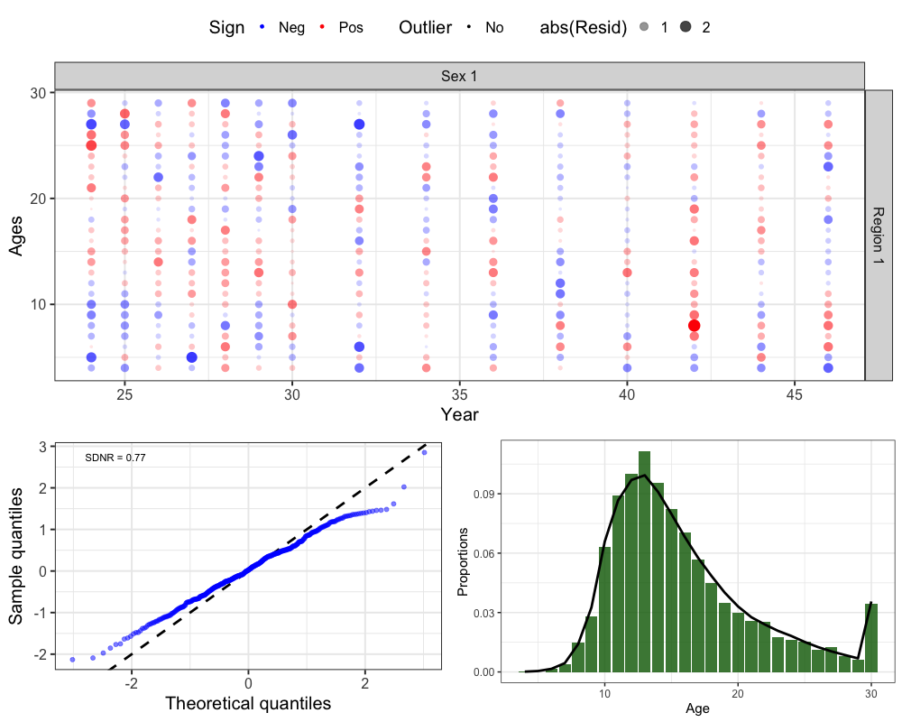
Fishery Lengths
# get one step ahead fishery lengths
fishlens <- get_osa(obs_mat = comp_prop$Obs_FishLen_mat, # observed fishery length compositions
exp_mat = comp_prop$Pred_FishLen_mat, # predicted fishery length compositions
N = francis_data$ISS_FishLenComps[1,which(francis_data$UseFishLenComps[,,1] == 1),1,1] * # input sample size
unique(francis_data$Wt_FishLenComps[1,which(francis_data$UseFishLenComps[,,1] == 1),1,1]), # francis weight
years = which(francis_data$UseFishLenComps[,,1] == 1), # years with fishery ages
fleet = 1, # fleet
bins = 21:52, # age bins
comp_type = 0, # composition type (age-specific)
bin_label = "Lengths" # bin labels
)
# plot OSA residuals
resid_plot <- SPoRC::plot_resids(osa_results = fishlens)
# Get Aggregated Plot
fishlen_agg <- comp_prop$Fishery_Lens %>%
group_by(Len, Fleet) %>%
summarize(obs = mean(obs), pred = mean(pred)) %>%
filter(Fleet == 1) %>%
ggplot() +
geom_col(aes(x = Len, y = obs), fill = 'darkgreen', alpha = 0.8) +
geom_line(aes(x = Len, y = pred), col = 'black', lwd = 1.3) +
theme_bw(base_size = 15) +
labs(x = 'Lengths', y = 'Proportions')
cowplot::plot_grid(resid_plot[[2]], # Bubble
cowplot::plot_grid(resid_plot[[1]], fishlen_agg, nrow = 1), # QQ and Aggregated
ncol = 1, rel_heights = c(0.6, 0.4))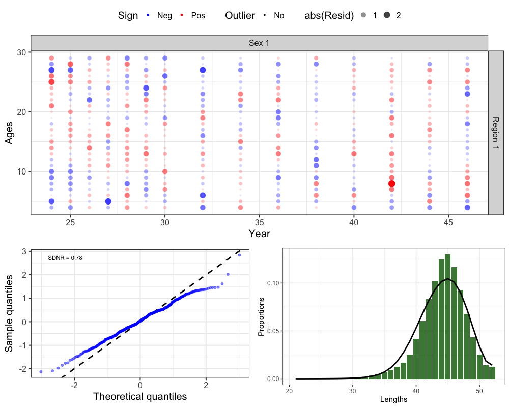
Survey Ages
# get one step ahead survey ages
srvages <- get_osa(obs_mat = comp_prop$Obs_SrvAge_mat, # observed survey age compositions
exp_mat = comp_prop$Pred_SrvAge_mat, # predicted survey age compositions
N = francis_data$ISS_SrvAgeComps[1,which(francis_data$UseSrvAgeComps[,,1] == 1),1,1] * # input sample size
unique(francis_data$Wt_SrvAgeComps[1,which(francis_data$UseSrvAgeComps[,,1] == 1),1,1]), # francis weight
years = which(francis_data$UseSrvAgeComps[,,1] == 1), # years with survey ages
fleet = 1, # fleet
bins = 4:30, # age bins
comp_type = 0, # composition type (age-specific)
bin_label = "Ages" # bin labels
)
# plot OSA residuals
resid_plot <- SPoRC::plot_resids(osa_results = srvages)
# Get Aggregated Plot
srvage_agg <- comp_prop$Survey_Ages %>%
group_by(Age, Fleet) %>%
summarize(obs = mean(obs), pred = mean(pred)) %>%
filter(Fleet == 1) %>%
ggplot() +
geom_col(aes(x = Age, y = obs), fill = 'darkgreen', alpha = 0.8) +
geom_line(aes(x = Age, y = pred), col = 'black', lwd = 1.3) +
theme_bw(base_size = 15) +
labs(x = 'Age', y = 'Proportions')
cowplot::plot_grid(resid_plot[[2]], # Bubble
cowplot::plot_grid(resid_plot[[1]], srvage_agg, nrow = 1), # QQ and Aggregated
ncol = 1, rel_heights = c(0.6, 0.4))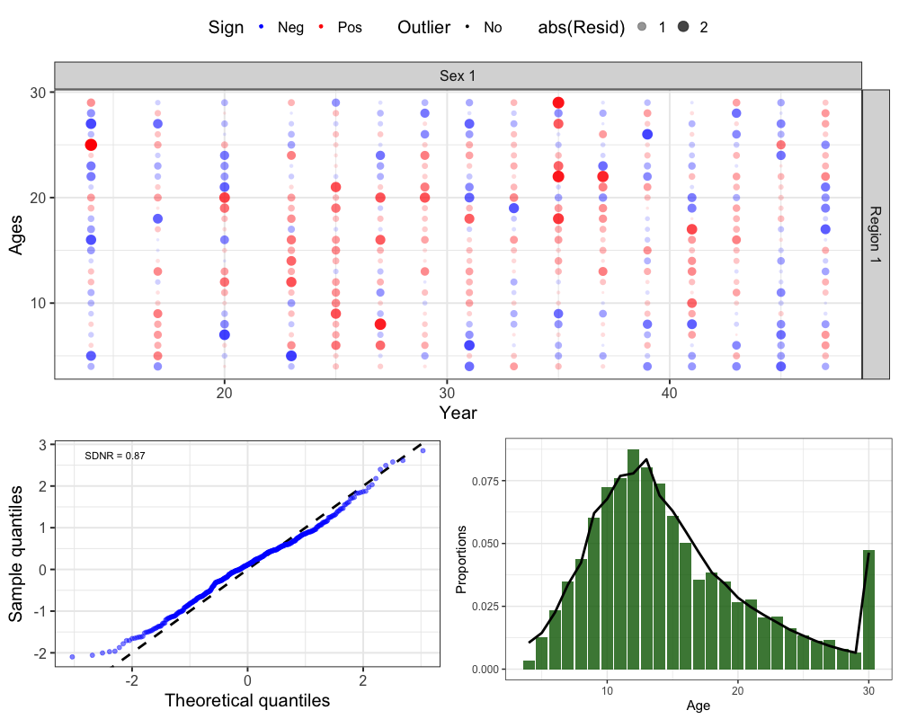
Retrospectives
In addition to evaluating model fits, it is useful to examine the
retrospective behavior of the model to identify potential
misspecifications and assess the consistency of management advice over
time. This can be done using the do_retrospective function,
which performs a retrospective analysis by sequentially removing data
from years prior to the terminal year. For models with Francis
re-weighting, each retrospective peel also updates the composition
weights, whereas models without re-weighting do not. The
get_retrospective_plot function then generates
visualizations of the retrospective results, including plots of relative
differences, absolute scale differences, and a squid plot of
recruitment.
Retrospectives (Without Francis)
nofrancis_retro <- do_retrospective(
n_retro = 10, # number of peels
data = data, # data list (not francis data)
parameters = parameters, # parameters list
mapping = mapping, # mapping list
random = NULL, # random effects
do_par = TRUE, # whether to parallellize
n_cores = 8, # number of cores to use
do_francis = FALSE, # whether to do francis within a given retrospective peel
)
# get retrospective plots
nofrancis_retro_plot <- get_retrospective_plot(nofrancis_retro, Rec_Age = 4)
nofrancis_retro_plot[[1]]
nofrancis_retro_plot[[2]]
nofrancis_retro_plot[[3]]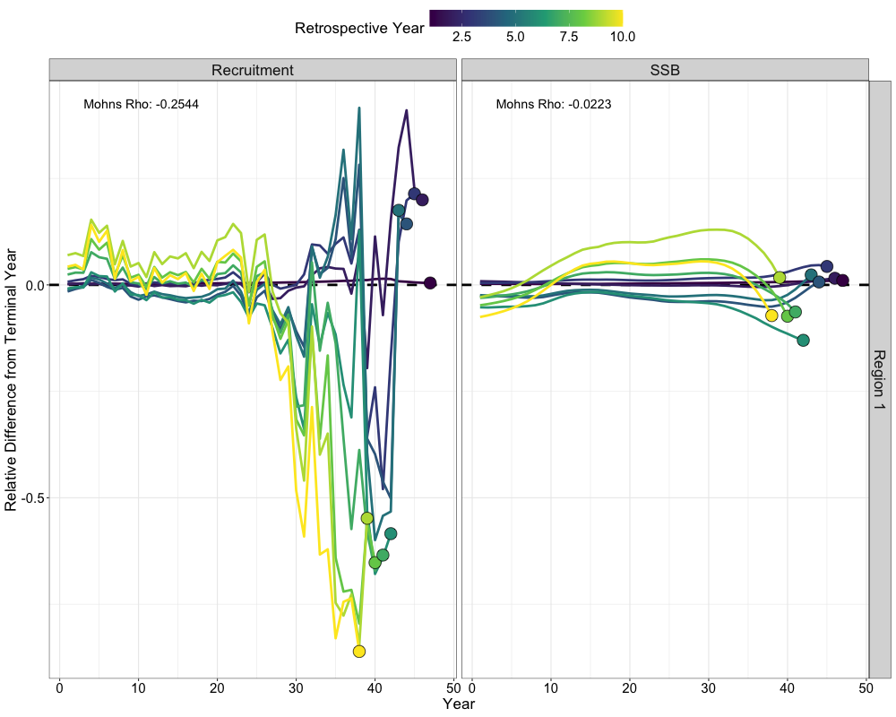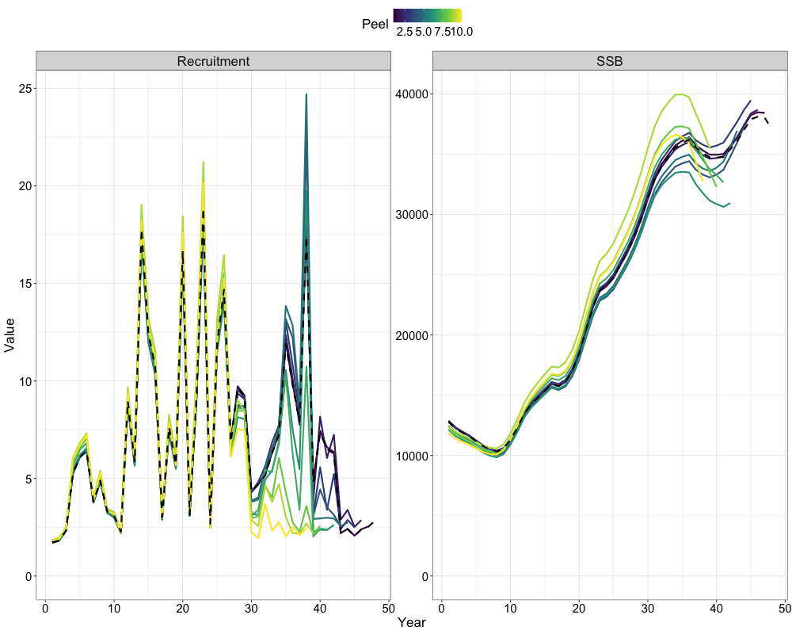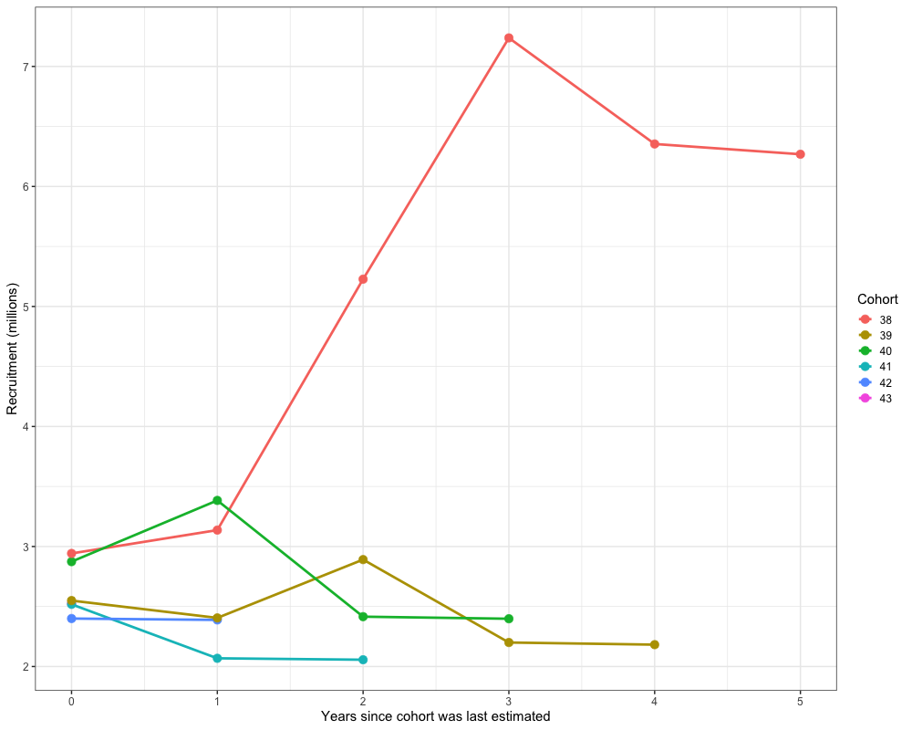
Retrospectives (With Francis)
# do retrospective w/ francis
francis_retro <- do_retrospective(
n_retro = 10, # number of peels
data = francis_data, # data list (francis data)
parameters = parameters, # parameters list
mapping = mapping, # mapping list
random = NULL, # random effects
do_par = TRUE, # whether to parallellize
n_cores = 8, # number of cores to use
do_francis = TRUE, # whether to do francis within a given retrospective peel
n_francis_iter = 10 # number of francis iterations to run within a given retrospective peel
)
# get retrospective plot
francis_retro_plot <- get_retrospective_plot(francis_retro, Rec_Age = 4)
francis_retro_plot[[1]]
francis_retro_plot[[2]]
francis_retro_plot[[3]]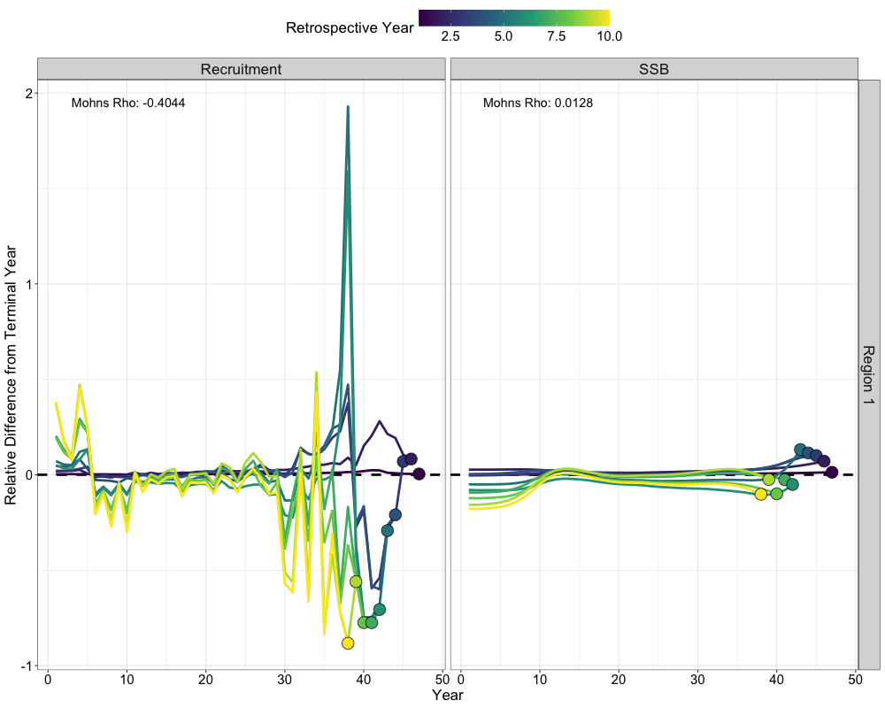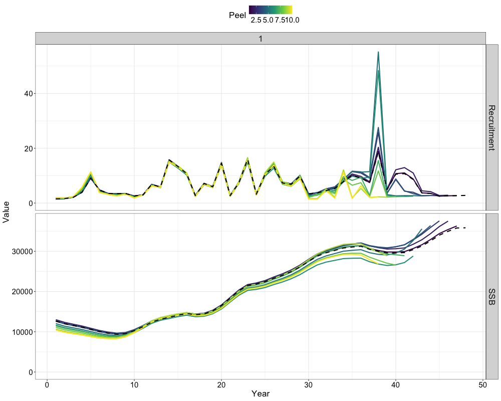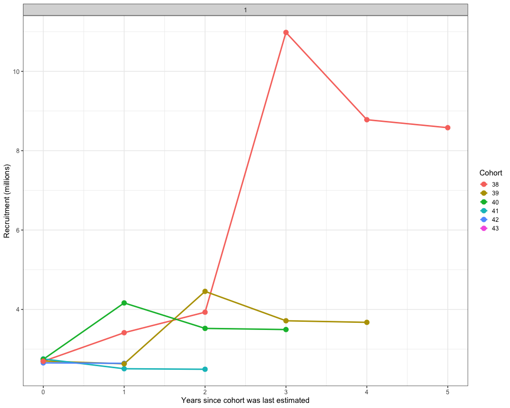
Likelihood Profiles
Another useful diagnostic tool that can help identify data conflits
and the potential need to re-parameterize the model are likelihood
profiles. Here, the do_likelihood_profile function is used
to profile the parameter ln_global_R0 in the Francis
re-weighted model. The function takes the data list, parameter list, and
mapping list, and iteratively evaluates the likelihood across a
specified range of values. The do_likelihood_profile then
outputs a list of profiled values for each data component with their
respective dimensions (e.g., likelihood profiles by fleet, region, year,
etc.) as well likelihood profiles for each data component, aggregated
across all their respective dimensions.
# do likelihood profile with francis weights
francis_meanrec_prof <- do_likelihood_profile(
francis_data, # francis data list
parameters, # parameter list
mapping, # mapping list
random = NULL, # random effects
what = 'ln_global_R0', # parameter to profile
min_val = log(francis_model$rep$R0) * 0.1, # min values to profile across
max_val = log(francis_model$rep$R0) * 2, # max values to profile across
inc = 0.1, # increment for min and max values to profile across
do_par = TRUE, # whether to parrallelize
n_cores = 8 # number of cores
)
# summarize profile
francis_mean_rec_profile <- francis_meanrec_prof$agg_nLL %>%
mutate(Summarized_Type = case_when(
str_detect(type, "Pen|Prior") ~ "Other",
str_detect(type, "Len") ~ "Length Comps",
str_detect(type, "Age") ~ "Age Comps",
str_detect(type, "Idx") ~ "Indices",
str_detect(type, "Catch") ~ "Catch",
str_detect(type, "jnLL") ~ "jnLL",
)) %>%
filter(value != 0) %>%
group_by(Summarized_Type, prof_val) %>%
summarize(value = sum(value), .groups = "drop") %>%
group_by(Summarized_Type) %>%
mutate(value = value - min(value))
ggplot(francis_mean_rec_profile, aes(x = prof_val, y = value, color = Summarized_Type)) +
geom_line(lwd = 1.3) +
geom_vline(xintercept = log(francis_model$rep$R0), lty = 2) +
labs(x = 'Log Mean Recruitment', y = "Scaled nLL", color = "Type") +
theme_bw(base_size = 15)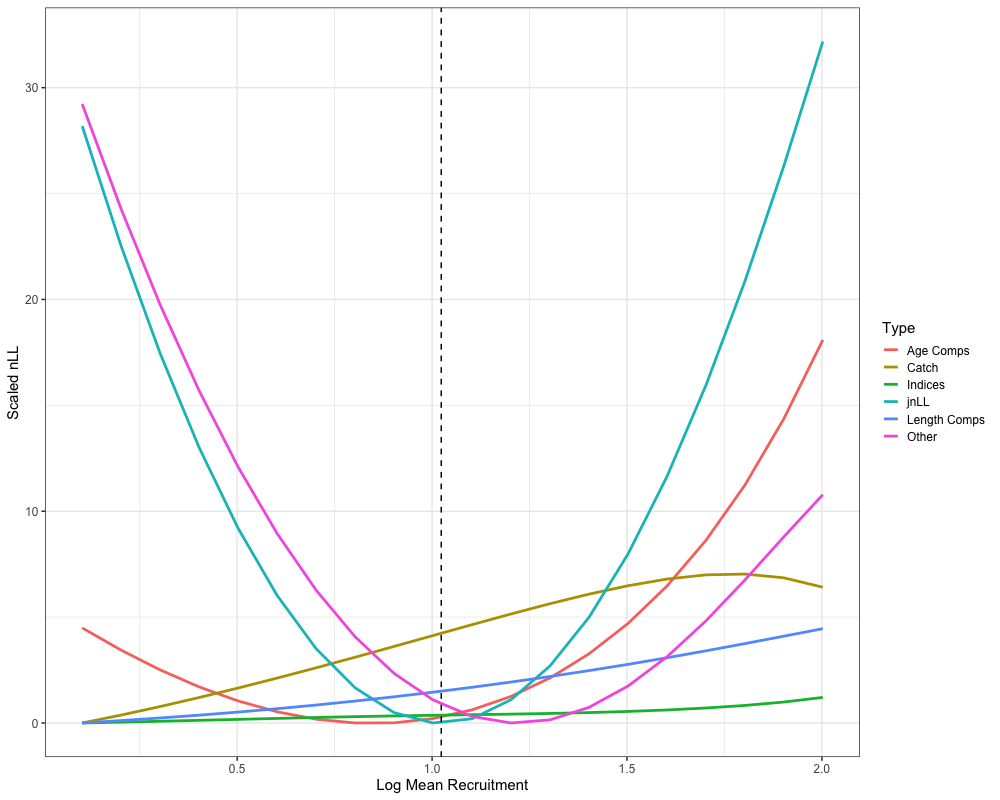
Jitter Analysis
Jitter analysis is a useful diagnostic for assessing whether a model
has truly converged, if it may be stuck in a local minimum, and to
understand model stability. The do_jitter function perturbs
the initial parameter values by adding random noise and refits the model
multiple times. In this example, 50 jittered starts are generated for
the Francis re-weighted model, with a standard deviation of 0.5
(additive normal) applied to the initial parameter values. Each jittered
model is optimized using three Newton loops, and parallel processing
with 8 cores is used to enhance computational speed. We can then plot
the jitter results to understand the number of times the model has
converged, whether a better solution was achieved, and trajectories of
spawning biomass and recruitment from these jitter results.
# get jitter results
jitter_res <- do_jitter(data = francis_data, # francis data list
parameters = parameters, # parameter list
mapping = mapping, # mapping list
random = NULL, # random effects
sd = 0.5, # standard deviation for jitter
n_jitter = 50, # number of jitters
n_newton_loops = 3, # newton loops to od
do_par = TRUE, # whether to parrallelize
n_cores = 8 # number of cores to use
)
# get proportion converged
prop_converged <- jitter_res %>%
filter(Year == 1, Type == 'Recruitment') %>%
summarize(prop_conv = sum(Hessian) / length(Hessian))
# get jitter results
final_mod <- reshape2::melt(francis_model$rep$SSB) %>% rename(Region = Var1, Year = Var2) %>%
mutate(Type = 'SSB') %>%
bind_rows(reshape2::melt(francis_model$rep$Rec) %>%
rename(Region = Var1, Year = Var2) %>% mutate(Type = 'Recruitment'))
ggplot() +
geom_line(jitter_res, mapping = aes(x = Year + 1976, y = value, group = jitter, color = Hessian), lwd = 1) +
geom_line(final_mod, mapping = aes(x = Year + 1976, y = value), color = "black", lwd = 1.3 , lty = 2) +
facet_grid(Type~Region, scales = 'free',
labeller = labeller(Region = function(x) paste0("Region ", x),
Type = c("Recruitment" = "Age 2 Recruitment (millions)", "SSB" = 'SSB (kt)'))) +
labs(x = "Year", y = "Value") +
theme_bw(base_size = 20) +
scale_color_manual(values = c("red", 'grey')) +
geom_text(data = jitter_res %>% filter(Type == 'SSB', Year == 1, jitter == 1),
aes(x = Inf, y = Inf, label = paste("Proportion Converged: ", round(prop_converged$prop_conv, 3))),
hjust = 1.1, vjust = 1.9, size = 6, color = "black")
ggplot(jitter_res, aes(x = jitter, y = jnLL, color = Max_Gradient, shape = Hessian)) +
geom_point(size = 5, alpha = 0.3) +
geom_hline(yintercept = min(francis_model$rep$jnLL), lty = 2, size = 2, color = "blue") +
facet_wrap(~Hessian, labeller = labeller(
Hessian = c("FALSE" = "non-PD Hessian", "TRUE" = 'PD Hessian')
)) +
scale_color_viridis_c() +
theme_bw(base_size = 20) +
theme(legend.position = "bottom") +
guides(color = guide_colorbar(barwidth = 15, barheight = 0.5)) +
labs(x = 'Jitter') +
geom_text(data = jitter_res %>% filter(Hessian == TRUE, Year == 1, jitter == 1),
aes(x = Inf, y = Inf, label = paste("Proportion Converged: ", round(prop_converged$prop_conv, 3))),
hjust = 1.1, vjust = 1.9, size = 6, color = "black")
MCMC
Lastly, SPoRC can also interact with other Bayesian software (i.e,
adnuts) to conduct MCMC analysis, which not only estimates
parameter uncertainty but also samples the full joint posterior,
revealing parameter correlations, skewed distributions, or potential
multimodality that MLE may miss. Comparing MCMC results with maximum
likelihood estimates further helps assess consistency in point estimates
and standard errors. In particular, we can utilize the native
functionality built into adnuts, which seamlessly
integrates with TMB and RTMB models, which will be demonstrated in the
following sections. First, let us install and load in the relevant
packages.
# load in adnuts ans associated packages for MCMC
install.packages('StanEstimators', repos = c('<https://andrjohns.r-universe.dev>', '<https://cloud.r-project.org>'))
devtools::install_github('Cole-Monnahan-NOAA/adnuts')
library(adnuts)The sample_snuts function in adnuts runs a
Bayesian MCMC analysis using the RTMB model. In this example, four
chains are run for 10,000 iterations each, along with 4 Markov chains.
Additionally, the adapt_delta is set a 0.99 to ensure that
the model takes smaller steps, which helps improve MCMC model
convergence. Default settings are used throughout this example
sample_snuts and users can refer to https://cole-monnahan-noaa.github.io/adnuts/ for further
details. After running MCMC diagnostics, users can then inspect summary
statistics from the model object, which includes posterior means,
standard deviations, effective sample sizes (n_eff), and
convergence diagnostics (R_hat).
# run MCMC
mcmc <- sample_snuts(francis_model, num_samples = 1e4, control = list(adapt_delta = 0.99))
# Check MCMC summary
diag_df <- mcmc$monitorWe can then inspect various model diagnostics, ranging from pairs plots, comparisons of the marginal distributions between MLE and MCMC, trace plots, and comparisons of uncertainty between MCMC and MLE.
pairs(mcmc)
plot_marginals(mcmc)
plot_uncertainties(mcmc) 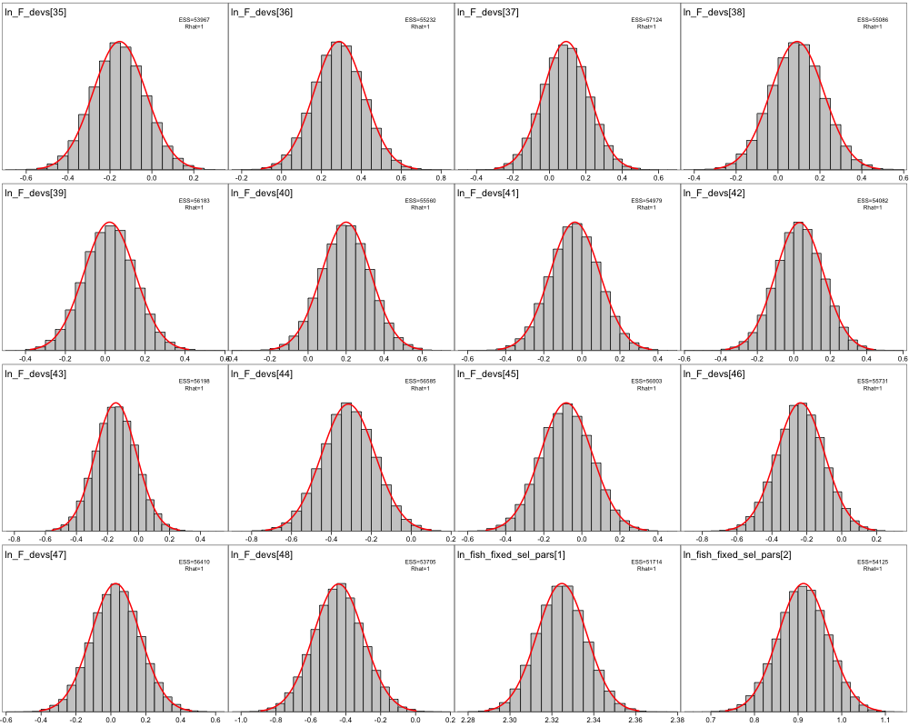
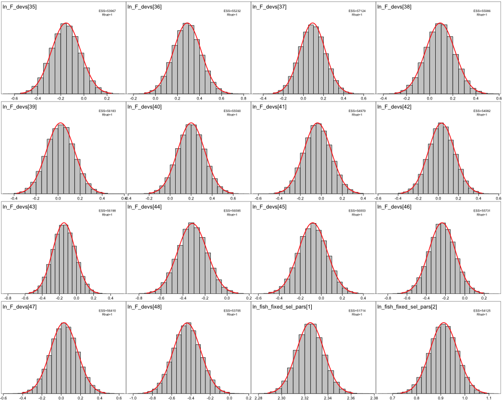
Time series of recruitment and spawning stock biomass derived from posterior samples can also readily be plotted.
# get mcmc time series plots
mcmc_ts_plot <- get_model_rep_from_mcmc(rmtb_obj = francis_model, adnuts_obj = mcmc_short, what = c("SSB", "Rec"), n_cores = 4)
# ssb plot
# summarize results
ssb_summry <- mcmc_ts_plot$SSB %>%
group_by(Var1, Var2) %>%
summarize(median = median(value),
lwr = quantile(value, 0.025),
upr = quantile(value, 0.975))
ggplot() +
geom_line(ssb_summry, mapping = aes(x = Var2, y = median)) +
geom_ribbon(ssb_summry, mapping = aes(x = Var2, y = median, ymin = lwr, ymax = upr), alpha = 0.3) +
geom_line(reshape2::melt(francis_model$rep$SSB), mapping = aes(x = Var2, y = value), col = 'red', lwd = 1.3, lty = 2) +
coord_cartesian(ylim = c(0, NA)) +
labs(x = 'Year', y = 'Spawning Stock Biomass') +
theme_bw(base_size = 15)
# rec plot
# summarize results
rec_summry <- mcmc_ts_plot$Rec %>%
group_by(Var1, Var2) %>%
summarize(median = median(value),
lwr = quantile(value, 0.025),
upr = quantile(value, 0.975))
ggplot() +
geom_line(rec_summry, mapping = aes(x = Var2, y = median)) +
geom_ribbon(rec_summry, mapping = aes(x = Var2, y = median, ymin = lwr, ymax = upr), alpha = 0.3) +
geom_line(reshape2::melt(francis_model$rep$Rec), mapping = aes(x = Var2, y = value), col = 'red', lwd = 1.3, lty = 2) +
coord_cartesian(ylim = c(0, NA)) +
labs(x = 'Year', y = 'Recruitment') +
theme_bw(base_size = 15)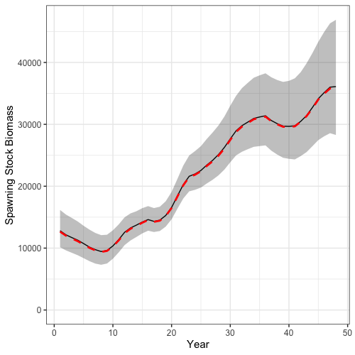
Reference Points and Projections
The final step in the assessment workflow is to provide management advice based on reference points derived from model estimates. For the GOA Dusky Rockfish model, reference points are based on spawning potential ratios, aiming to maintain the population at by fishing at or below . These reference points are then projected forward to generate catch advice for future years. Additionally, in compliance with the Magnuson-Stevens Reauthorization Act, a range of projection scenarios need to be conducted to evaluate whether the population is within sustainable limits.
Reference Points
To derive reference points for catch advice and population
projections, the Get_Reference_Points function is used.
Reference points corresponding to
,
,
and
are calculated. The calc_rec_st_yr argument specifies the
vector of estimated recruitment starting from year 3 (which corresponds
to 1979), and subtracts the terminal year by rec_age = 4 to
compute the mean recruitment used in calculating
.
# get reference points
spr_35 <- Get_Reference_Points(data = francis_data,
rep = francis_model$rep,
SPR_x = 0.35, t_spwn = 0, sex_ratio_f = 0.5,
type = "single_region",
what = 'SPR',
calc_rec_st_yr = 3, rec_age = 4)
spr_40 <- Get_Reference_Points(data = francis_data,
rep = francis_model$rep,
type = "single_region",
what = 'SPR',
SPR_x = 0.4, t_spwn = 0, sex_ratio_f = 0.5,
calc_rec_st_yr = 3, rec_age = 4)
spr_60 <- Get_Reference_Points(data = francis_data,
rep = francis_model$rep,
type = "single_region",
what = 'SPR',
SPR_x = 0.6, t_spwn = 0, sex_ratio_f = 0.5,
calc_rec_st_yr = 3, rec_age = 4)
# Extract reference points
b40 <- spr_40$b_ref_pt
b60 <- spr_60$b_ref_pt
b35 <- spr_35$b_ref_pt
f40 <- spr_40$f_ref_pt
f35 <- spr_35$f_ref_pt
f60 <- spr_60$f_ref_ptProjections
The reference points derived above can be used to provide catch
advice through population projections. First, a harvest control rule
(HCR) is defined with the HCR_function, which determines
fishing mortality based on stock status relative to a reference biomass
.
If stock status is at or above the reference point, fishing occurs at
the target
;
if stock status falls between a lower threshold (alpha) and
the reference point, fishing mortality is scaled linearly; and if stock
status is below the threshold, fishing is set to zero. Projection
parameters are then specified, including the number of simulations
(n_sims), projection years (n_proj_yrs), sex
ratio, number of regions, ages, and fleets. Arrays are initialized for
terminal numbers-at-age (terminal_NAA), weight-at-age
(WAA and WAA_fish), maturity-at-age
(MatAA), selectivity (fish_sel), movement (not
used in this single-region model), terminal fishing mortality
(terminal_F), natural mortality (natmort), and
recruitment, using the terminal values and historical recruitment from
the fitted Francis re-weighted model. These inputs then form the basis
for projecting future population dynamics and deriving catch advice
under the specified HCR.
# Define HCR to use for projections
HCR_function <- function(x, frp, brp, alpha = 0.05) {
stock_status <- x / brp # define stock status
# If stock status is > 1
if(stock_status >= 1) f <- frp
# If stock status is between brp and alpha
if(stock_status > alpha && stock_status < 1) f <- frp * (stock_status - alpha) / (1 - alpha)
# If stock status is less than alpha
if(stock_status < alpha) f <- 0
return(f)
}
# define projection parameters
n_sims <- 1e3
t_spawn <- 0
n_proj_yrs <- 25
n_regions <- 1
n_ages <- length(francis_data$ages)
n_sexes <- 1
n_fish_fleets <- 1
n_sexes <- 1
do_recruits_move <- 0
terminal_NAA <- array(francis_model$rep$NAA[,length(francis_data$years),,], dim = c(n_regions, n_ages, n_sexes))
terminal_NAA0 <- array(francis_model$rep$NAA0[,length(francis_data$years),,], dim = c(n_regions, n_ages, n_sexes))
WAA <- array(rep(francis_data$WAA[,length(francis_data$years),,], each = n_proj_yrs), dim = c(n_regions, n_proj_yrs, n_ages, n_sexes)) # weight at age
WAA_fish <- array(rep(francis_data$WAA[,length(francis_data$years),,], each = n_proj_yrs), dim = c(n_regions, n_proj_yrs, n_ages, n_sexes, n_fish_fleets)) # weight at age for fishery
MatAA <- array(rep(francis_data$MatAA[,length(francis_data$years),,], each = n_proj_yrs), dim = c(n_regions, n_proj_yrs, n_ages, n_sexes)) # maturity at age
fish_sel <- array(rep(francis_model$rep$fish_sel[,length(francis_data$years),,,], each = n_proj_yrs), dim = c(n_regions, n_proj_yrs, n_ages, n_sexes, n_fish_fleets)) # selectivity
Movement <- array(rep(francis_model$rep$Movement[,,length(francis_data$years),,], each = n_proj_yrs), dim = c(n_regions, n_regions, n_proj_yrs, n_ages, n_sexes)) # movement - not used
terminal_F <- array(francis_model$rep$Fmort[,length(francis_data$years),], dim = c(n_regions, n_fish_fleets)) # terminal F
natmort <- array(rep(francis_model$rep$natmort[,length(francis_data$years),,], each = n_proj_yrs), dim = c(n_regions, n_proj_yrs, n_ages, n_sexes)) # natural mortaility
recruitment <- array(francis_model$rep$Rec[,3:(length(francis_data$years) - 4)], dim = c(n_regions, length(3:(length(francis_data$years) - 4)))) # recruitment from years 3 - terminal (corresponds to 1979)
sexratio <- array(1, dim = c(n_regions, n_proj_yrs, n_sexes)) # recruitment sex ratio Next, we can define the Alaska projection scenarios to understand if
the stock is within sustainable limits. These scenarios vary in how
fishing mortality is applied relative to biological reference points.
Scenario 1 applies the harvest control rule (HCR) using
as the maximum allowable fishing mortality, with the annual mean of
catch across simulations providing the annual catch advice. Scenario 2
also uses the HCR but scales
based on the previous year’s fishing mortality. Scenario 3 applies a
constant fishing mortality equal to the average of the last five years.
Scenario 4 applies fishing mortality using
,
while Scenario 5 assumes no fishing. Scenario 6 applies the HCR with
,
representing the overfishing limit (FOFL). Finally,
Scenario 7 applies the HCR with
in the first two projection years and then transitions to
in later years.
# Define the F used for each scenario (Based on BSAI Intro Report - Alaska Scenarios)
proj_inputs <- list(
# Scenario 1 - Using HCR to adjust maxFABC
list(f_ref_pt = array(f40, dim = c(n_regions, n_proj_yrs)),
b_ref_pt = array(b40, dim = c(n_regions, n_proj_yrs)),
fmort_opt = 'HCR'
),
# Scenario 2 - Using HCR to adjust maxFABC based on last year's value (constant fraction - author specified F)
list(f_ref_pt = array(f40 * (f40 / 0.091), dim = c(n_regions, n_proj_yrs)),
b_ref_pt = array(b40, dim = c(n_regions, n_proj_yrs)),
fmort_opt = 'HCR'
),
# Scenario 3 - Using an F input of last 5 years average F, and
list(f_ref_pt = array(mean(francis_model$rep$Fmort[1, 43:47,]), dim = c(n_regions, n_proj_yrs)),
b_ref_pt = NULL,
fmort_opt = 'Input'
),
# Scenario 4 - Using F60
list(f_ref_pt = array(f60, dim = c(n_regions, n_proj_yrs)),
b_ref_pt = NULL,
fmort_opt = 'Input'
),
# Scenario 5 - F is set at 0
list(f_ref_pt = array(0, dim = c(n_regions, n_proj_yrs)),
b_ref_pt = NULL,
fmort_opt = 'Input'
),
# Scenario 6 - Using HCR to adjust FOFL
list(f_ref_pt = array(f35, dim = c(n_regions, n_proj_yrs)),
b_ref_pt = array(b35, dim = c(n_regions, n_proj_yrs)),
fmort_opt = 'HCR'
),
# Scenario 7 - Using HCR to adjust FABC in first 2 projection years, and then later years are adjusting FOFL
list(f_ref_pt = array(c(rep(f40, 2), rep(f35, n_proj_yrs - 2)), dim = c(n_regions, n_proj_yrs)),
b_ref_pt = array(c(rep(b40, 2), rep(b35, n_proj_yrs - 2)), dim = c(n_regions, n_proj_yrs)),
fmort_opt = 'HCR'
)
)Following the setup of the seven projection scenarios, we can then simulate the population dynamics forward under each case to evaluate future spawning biomass, fishing mortality, and catch. The code below loops over all projection scenarios and simulation replicates, keeping record of spawning stock biomass, fishing mortality, and catch,
# store outputs
all_scenarios_f <- array(0, dim = c(n_regions, n_proj_yrs, n_sims, length(proj_inputs)))
all_scenarios_ssb <- array(0, dim = c(n_regions, n_proj_yrs, n_sims, length(proj_inputs)))
all_scenarios_catch <- array(0, dim = c(n_regions, n_proj_yrs, n_fish_fleets, n_sims, length(proj_inputs)))
set.seed(123)
for (i in seq_along(proj_inputs)) {
for (sim in 1:n_sims) {
# do population projection
out <- SPoRC::Do_Population_Projection(n_proj_yrs = n_proj_yrs,
n_regions = n_regions,
n_ages = n_ages,
n_sexes = n_sexes,
sexratio = sexratio,
n_fish_fleets = n_fish_fleets,
do_recruits_move = do_recruits_move,
recruitment = recruitment,
terminal_NAA = terminal_NAA,
terminal_NAA0 = terminal_NAA0,
terminal_F = terminal_F,
natmort = natmort,
WAA = WAA,
WAA_fish = WAA_fish,
MatAA = MatAA,
fish_sel = fish_sel,
Movement = Movement,
f_ref_pt = proj_inputs[[i]]$f_ref_pt,
b_ref_pt = proj_inputs[[i]]$b_ref_pt,
HCR_function = HCR_function,
recruitment_opt = "inv_gauss",
fmort_opt = proj_inputs[[i]]$fmort_opt,
t_spawn = t_spawn
)
all_scenarios_ssb[,,sim,i] <- out$proj_SSB
all_scenarios_catch[,,,sim,i] <- out$proj_Catch
all_scenarios_f[,,sim,i] <- out$proj_F[,-(n_proj_yrs+1)] # remove last year, since it's not used
} # end sim loop
print(i)
} # end i loopProjections of spawning stock biomass, catch advice, and fishing mortality can then be visualized as follows.
Spawning Biomass Projections
# Get historical SSB
historical <- reshape2::melt(array(rep(francis_model$rep$SSB, n_sims),
dim = c(n_regions, length(francis_data$years), n_sims))) %>%
mutate(Year = Var2 + 1976,
Scenario = "FABC (F40)", # or change to match the scenarios you're plotting
Type = "Historical") %>%
rename(Region = Var1, Simulation = Var3, SSB = value)
# Get all scenario projections
scenarios <- reshape2::melt(all_scenarios_ssb) %>%
mutate(Year = Var2 + 2023,
Scenario = case_when(
Var4 == 1 ~ "S1: FABC (F40)",
Var4 == 2 ~ "S2: FABC Ratio",
Var4 == 3 ~ "S3: F Last 5 Years",
Var4 == 4 ~ "S4: F60 SPR",
Var4 == 5 ~ "S5: No Fishing",
Var4 == 6 ~ "S6: FOFL",
Var4 == 7 ~ "S7: FABC -> FOFL",
TRUE ~ paste("Scenario", Var4)
),
Type = "Projection") %>%
rename(Region = Var1, Simulation = Var3, SSB = value)
# expand historical SSB for plotting
scenarios_unique <- unique(scenarios$Scenario)
historical_expanded <- historical[rep(1:nrow(historical), times = length(scenarios_unique)), ]
historical_expanded$Scenario <- rep(scenarios_unique, each = nrow(historical))
# combine
combined_ssb <- bind_rows(historical_expanded, scenarios)
combined_ssb %>%
ggplot(aes(x = Year, y = SSB, group = interaction(Scenario, Simulation), color = Type)) +
geom_line(alpha = 0.05) +
facet_wrap(~Scenario, scales = 'free') +
geom_hline(yintercept = b40, lty = 2) +
scale_color_manual(values = c("Historical" = "black", "Projection" = "blue")) +
theme_bw(base_size = 15) +
theme(legend.position = 'none')
combined_ssb %>%
filter(Year > 2024) %>%
group_by(Year, Scenario, Type) %>%
summarize(lwr = quantile(SSB, 0.025),
upr = quantile(SSB, 0.975),
SSB = mean(SSB)) %>%
ggplot(aes(x = Year, y = SSB, ymin = lwr, ymax = upr)) +
geom_line(alpha = 1, lwd = 1.3) +
geom_ribbon(color = NA, alpha = 0.3) +
facet_wrap(~Scenario) +
coord_cartesian(ylim = c(0, NA)) +
geom_hline(yintercept = b40, lty = 2) +
theme_bw(base_size = 15) +
theme(legend.position = 'none')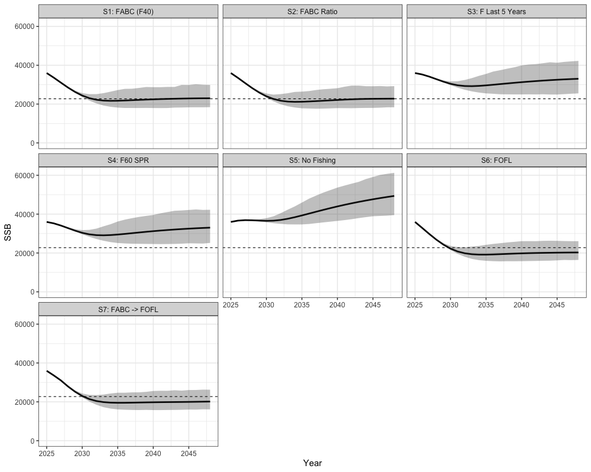
Catch Projections
# Get historical catch
historical <- reshape2::melt(array(rep(francis_data$ObsCatch, n_sims),
dim = c(n_regions, length(francis_data$years), francis_data$n_fish_fleets, n_sims))) %>%
mutate(Year = Var2 + 1976,
Scenario = "FABC (F40)", # or change to match the scenarios you're plotting
Type = "Historical") %>%
rename(Region = Var1, Simulation = Var4, Fleet = Var3, Catch = value) %>%
select(-Var2)
historical$Catch[is.na(historical$Catch)] <- 0
# Get all scenario projections
scenarios <- reshape2::melt(all_scenarios_catch) %>%
mutate(Year = Var2 + 2023,
Scenario = case_when(
Var5 == 1 ~ "S1: FABC (F40)",
Var5 == 2 ~ "S2: FABC Ratio",
Var5 == 3 ~ "S3: F Last 5 Years",
Var5 == 4 ~ "S4: F60 SPR",
Var5 == 5 ~ "S5: No Fishing",
Var5 == 6 ~ "S6: FOFL",
Var5 == 7 ~ "S7: FABC -> FOFL",
TRUE ~ paste("Scenario", Var5)
),
Type = "Projection") %>%
rename(Region = Var1, Simulation = Var4, Catch = value, Fleet = Var3) %>%
select(-c(Var2, Var5))
# expand historical catch for plotting
scenarios_unique <- unique(scenarios$Scenario)
historical_expanded <- historical[rep(1:nrow(historical), times = length(scenarios_unique)), ]
historical_expanded$Scenario <- rep(scenarios_unique, each = nrow(historical))
# combine
combined_cat <- bind_rows(historical_expanded, scenarios)
combined_cat %>%
group_by(Year, Scenario, Simulation, Type, Region) %>%
summarize(Catch = sum(Catch)) %>%
ggplot(aes(x = Year, y = Catch, group = interaction(Scenario, Simulation), color = Type)) +
geom_line(alpha = 0.05) +
facet_wrap(~Scenario) +
coord_cartesian(ylim = c(0, NA)) +
scale_color_manual(values = c("Historical" = "black", "Projection" = "blue")) +
theme_bw(base_size = 15) +
theme(legend.position = 'none')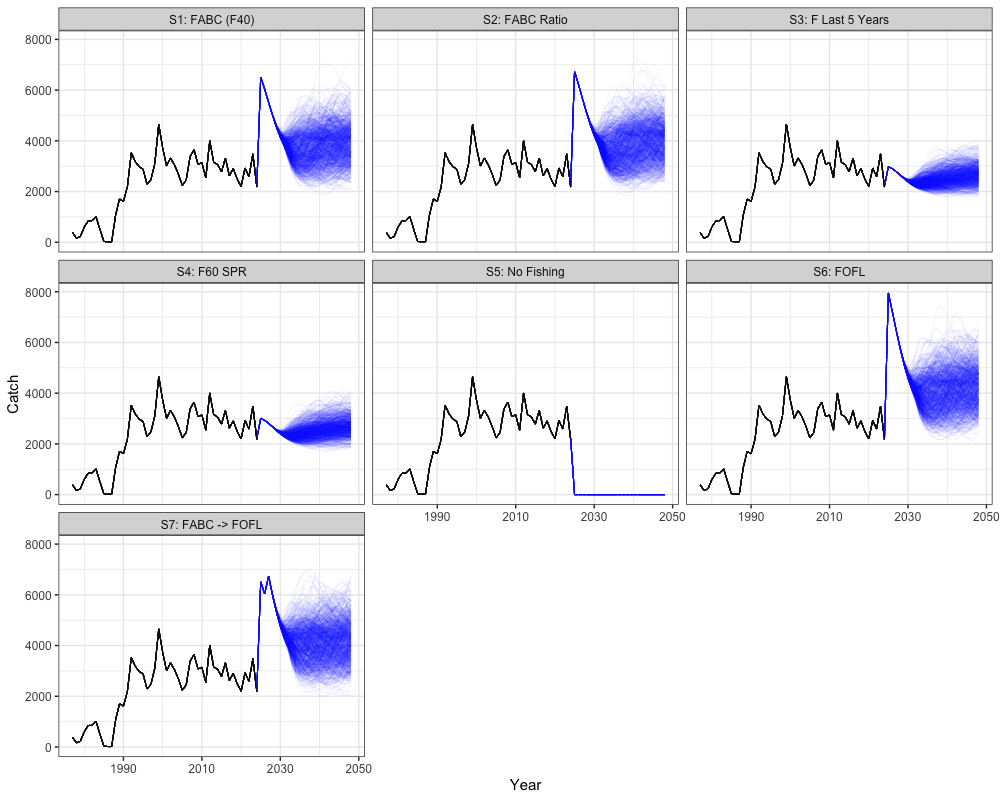
combined_cat %>%
filter(Year > 2024) %>%
group_by(Year, Scenario, Simulation, Type, Region) %>%
summarize(Catch = sum(Catch)) %>%
group_by(Year, Scenario, Type) %>%
summarize(lwr = quantile(Catch, 0.025),
upr = quantile(Catch, 0.975),
Catch = mean(Catch)) %>%
ggplot(aes(x = Year, y = Catch, ymin = lwr, ymax = upr)) +
geom_line(alpha = 1, lwd = 1.3) +
geom_ribbon(color = NA, alpha = 0.3) +
facet_wrap(~Scenario) +
coord_cartesian(ylim = c(0, NA)) +
theme_bw(base_size = 15) +
theme(legend.position = 'none')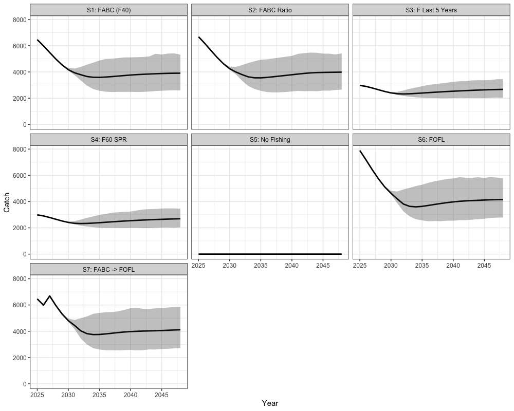
Catch Advice under
Catch advice is summarized by projecting forward under Scenario 1, which applies the harvest control rule with as the maximum allowable fishing mortality. The plots show the mean projected catch with 95% uncertainty intervals across simulations, providing the expected range of allowable catch in future years under this strategy.
combined_cat %>%
filter(Year > 2024, Scenario == "S1: FABC (F40)") %>%
group_by(Year, Scenario, Simulation, Type, Region) %>%
summarize(Catch = sum(Catch)) %>%
group_by(Year, Scenario, Type) %>%
summarize(lwr = quantile(Catch, 0.025),
upr = quantile(Catch, 0.975),
Catch = mean(Catch))
combined_cat %>%
filter(Year > 2024, Scenario == "S1: FABC (F40)") %>%
group_by(Year, Scenario, Simulation, Type, Region) %>%
summarize(Catch = sum(Catch)) %>%
group_by(Year, Scenario, Type) %>%
summarize(lwr = quantile(Catch, 0.025),
upr = quantile(Catch, 0.975),
Catch = mean(Catch)) %>%
ggplot(aes(x = Year, y = Catch, ymin = lwr, ymax = upr)) +
geom_line(alpha = 1, lwd = 1.3) +
geom_ribbon(color = NA, alpha = 0.3) +
coord_cartesian(ylim = c(0, NA)) +
theme_bw(base_size = 15) +
theme(legend.position = 'none')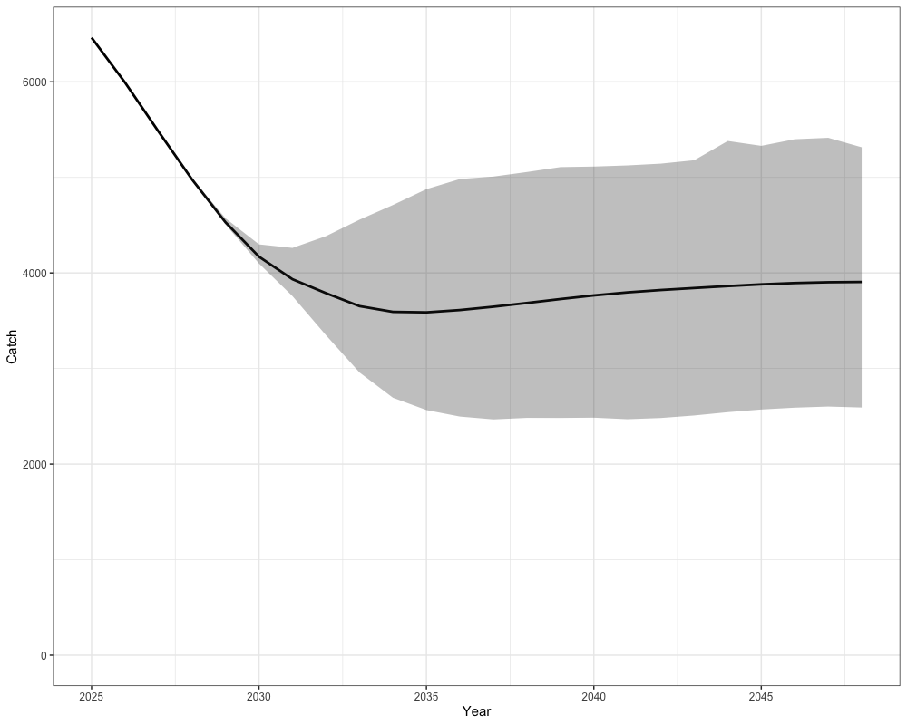
Fishing Mortality Projections
# Get historical F
historical <- reshape2::melt(array(rep(as.vector(apply(francis_model$rep$Fmort, c(1,2), sum)), n_sims),
dim = c(n_regions, length(francis_data$years), n_sims))) %>%
mutate(Year = Var2 + 1976,
Scenario = "FABC (F40)", # or change to match the scenarios you're plotting
Type = "Historical") %>%
rename(Region = Var1, Simulation = Var3, Fmort = value)
# Get all scenario projections
scenarios <- reshape2::melt(all_scenarios_f) %>%
mutate(Year = Var2 + 2023,
Scenario = case_when(
Var4 == 1 ~ "S1: FABC (F40)",
Var4 == 2 ~ "S2: FABC Ratio",
Var4 == 3 ~ "S3: F Last 5 Years",
Var4 == 4 ~ "S4: F60 SPR",
Var4 == 5 ~ "S5: No Fishing",
Var4 == 6 ~ "S6: FOFL",
Var4 == 7 ~ "S7: FABC -> FOFL",
TRUE ~ paste("Scenario", Var4)
),
Type = "Projection") %>%
rename(Region = Var1, Simulation = Var3, Fmort = value)
# expand historical F for plotting
scenarios_unique <- unique(scenarios$Scenario)
historical_expanded <- historical[rep(1:nrow(historical), times = length(scenarios_unique)), ]
historical_expanded$Scenario <- rep(scenarios_unique, each = nrow(historical))
# combine
combined_fmort <- bind_rows(historical_expanded, scenarios)
combined_fmort %>%
ggplot(aes(x = Year, y = Fmort, group = interaction(Scenario, Simulation), color = Type)) +
geom_line(alpha = 0.05) +
facet_wrap(~Scenario, scales = 'free') +
scale_color_manual(values = c("Historical" = "black", "Projection" = "blue")) +
theme_bw(base_size = 15) +
theme(legend.position = 'none') +
labs(y = 'Fully Selected Fishing Mortality')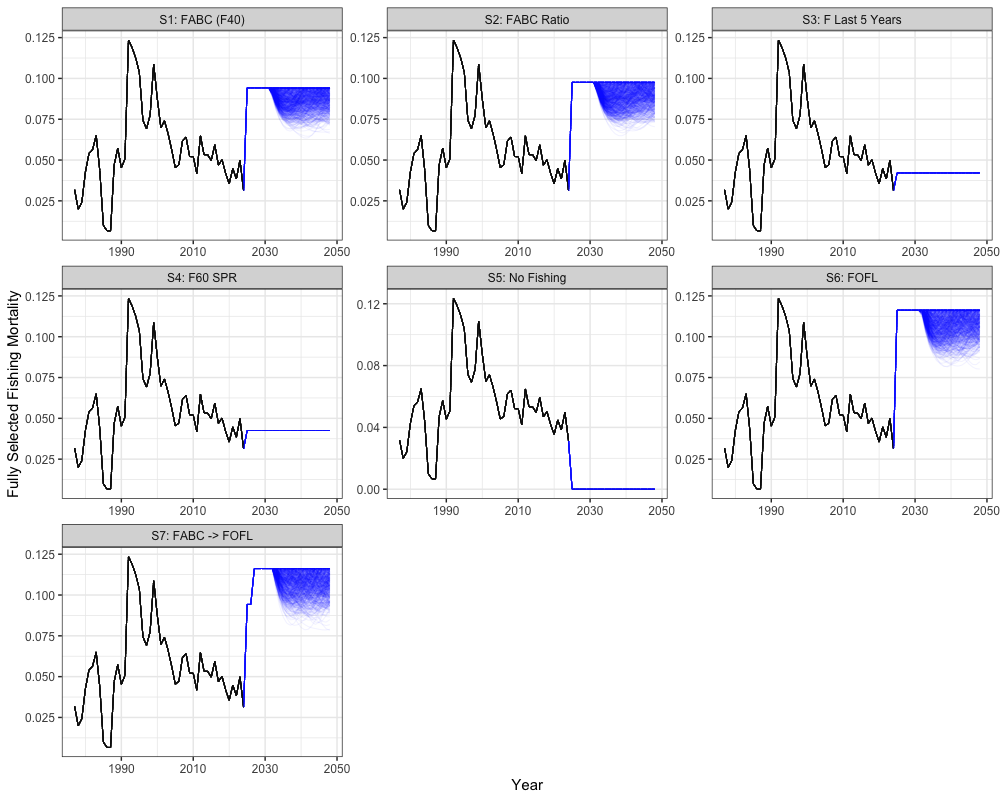
combined_fmort %>%
filter(Year > 2024) %>%
group_by(Year, Scenario, Type) %>%
summarize(lwr = quantile(Fmort, 0.025),
upr = quantile(Fmort, 0.975),
Fmort = mean(Fmort)) %>%
ggplot(aes(x = Year, y = Fmort, ymin = lwr, ymax = upr)) +
geom_line(alpha = 1, lwd = 1.3) +
geom_ribbon(color = NA, alpha = 0.3) +
facet_wrap(~Scenario) +
coord_cartesian(ylim = c(0, NA)) +
theme_bw(base_size = 15) +
theme(legend.position = 'none') +
labs(y = 'Fully Selected Fishing Mortality')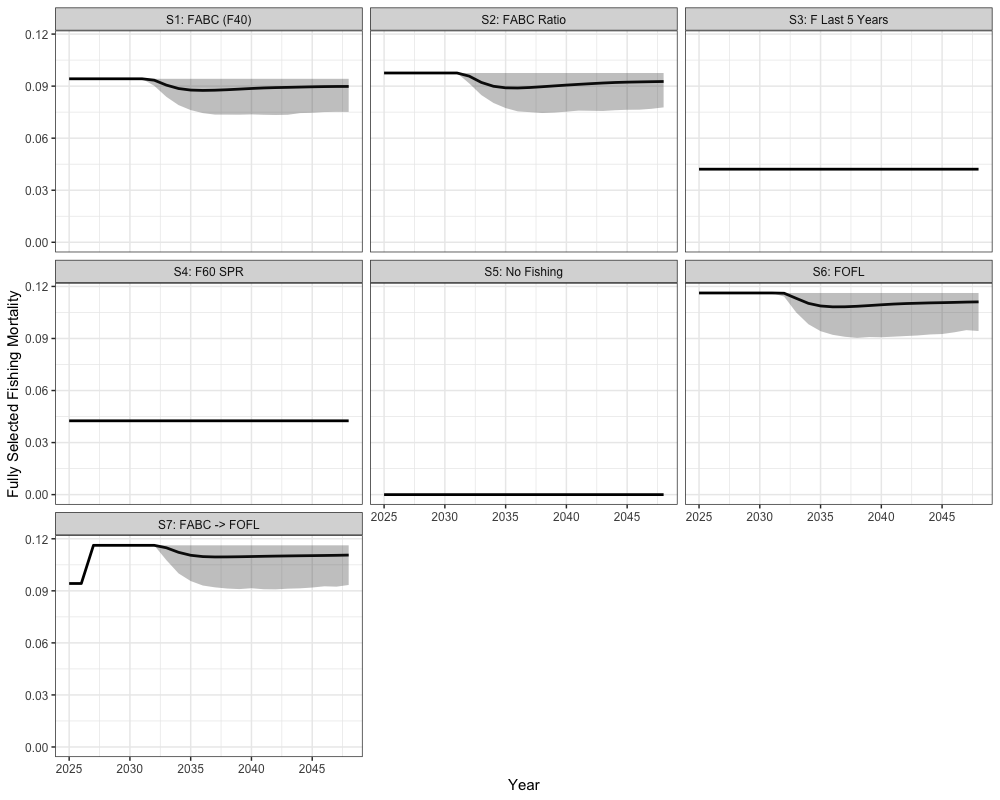